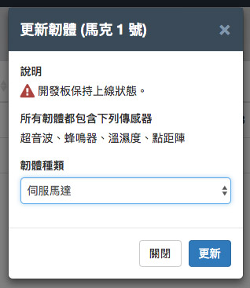
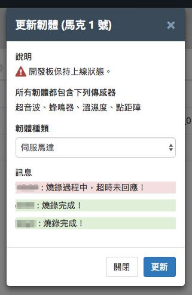

Device 裝置管理 ( 雲端更新 )
如果已經透過 Webduino Device 裝置管理新增與認證裝置，下一步就可以開始進行雲端更新，不論裝置是否在身邊，只要裝置處於上線狀態，就能透過雲端更新的方式也可輕鬆進行遠端更新，甚至多台裝置可以同時更新、同時設定。
雲端更新韌體
雲端更新的方式很簡單，一開始先勾選需要雲端更新的裝置，點選左上方的「更新韌體」按鈕，雲端更新可以進行單選或是多選，但所選取的裝置必須為同一種類型且經過認證，如果發現多選之後無法點選更新按鈕，可能是包含了不同類型的裝置，或有某些裝置尚未經過認證。( 更新版本請參考下方「雲端更新版本」 )
雲端更新支援的開發板：馬克一號、Fly ( Smart 目前僅支援雲端更新版本 )
開發板 SSID 為 wa6000 號之前的開發板無法進行更新，需寄回 Webduino 進行更新 ( 例如 wa6001 可以更新，wa5999 無法更新 )，郵寄地址：80661 高雄市前鎮區復興四路 12 號 2 樓之 6，慶奇科技收。( 請於信封或包裹內容描述「無法進行雲端更新，協助更新版本」)

點選更新韌體按鈕之後，可以從下拉選單選擇需要更新的韌體。

選擇完成後就會開始進行更新，更新完成，開發板就會變成相對應的韌體了。
注意，更新的時候切勿移除開發板電源或中斷網路連線，避免更新失敗。

使用 Webduino 雲端平台更新的好處，只要裝置都經過認證，就可以一次勾選多台裝置同時更新。
同時更新必須為同一種類型的開發板。

在燒錄完成的訊息提示裡，也會標註每一個裝置的燒錄狀態，燒錄成功會用綠色表示，燒錄失敗會用紅色表示。

雲端更新版本
除了更新操控元件的韌體外，亦可透過「更新版本」的按鈕，將開發板核心程式更新，近一步取得更穩定的開發板核心程式。( 注意，更新的時候切勿移除開發板電源或中斷網路連線，避免更新失敗。 )
雲端更新版本支援的開發板：馬克一號、Fly、Smart

技術支援
若雲端更新或添加裝置有遇到任何問題，可透過以下幾種方式聯繫技術人員，尋求技術協助：
- Webduino 粉絲團：https://www.facebook.com/webduino
- 技術討論社團：https://www.facebook.com/groups/webduino
- 客服信箱：webduino.io@gmail.com
- 客服電話：886-7-3388511
如果您還想了解更多，可以參考：
2. Blockly 教學：https://goo.gl/h6s7GY
3. 產品總覽：https://webduino.io/buy.html
4. 露天賣場：http://goo.gl/0Dj9ip